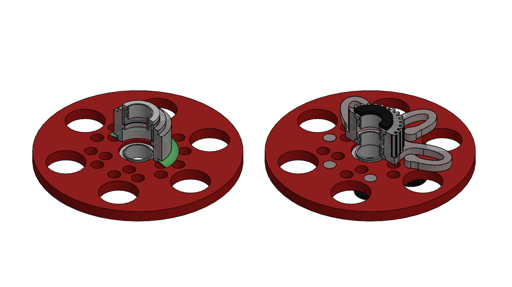
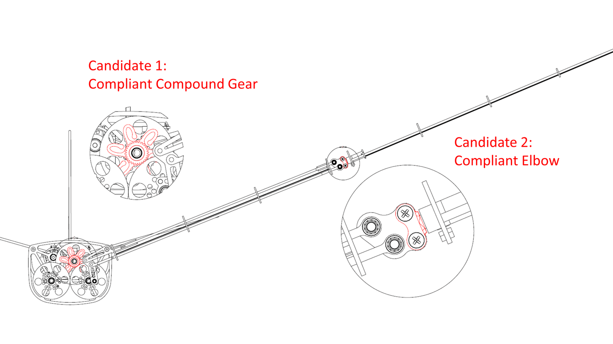
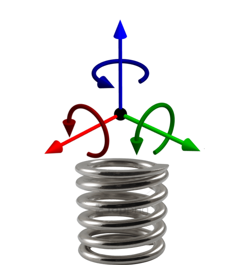

Serial-Elastic Compound Gear
Serial-elasticity is good for two reasons: absorbing crash impact and enabling full throttle.

Figure 1. the old compound gear rigidly-assembled by epoxy (painted green above) and the new serial-elastic compound gear
Absorbing Crash Impact:
My old compound gear was rigidly assembled with epoxy (Figure 1. Left). The epoxy keeps breaking apart during crashes. This reminded me of the first reading assignments I got from Prof. Kota: Two Schools of Design. Somewhere in this reading, Steven Vogel pointed out that nature’s designs (species in the natural world) are strong but not stiff: they bend but do not break. Vogel proposed that mechanical designs may also embrace flexibility/elasticity/compliance.
I designed and SLA-printed the serial-elastic compound gear on May 8 (Figure 1. Right). It never broke.
Enabling Full Throttle:
Back-of-envelope estimation suggests that the multibody-dynamics load is composed of two parts. At low ω (low flapping frequency), the gravitational load dominates. At high ω, the motional load dominates.
The estimation was verified by all my observation from Jan. 2021 to Apr. 2021. At a low throttle (below 30%), the motor cannot overcome gravity and cannot complete the upward stroke. At a full throttle (100%), the motor stalled at the turning point from downstroke to upstroke, where the motional load reaches its peak. Serial-elasticity should reduce peak load, thus preventing the motor from stalling.
With the serial-elastic compound gear, the motor no longer stalled at full throttle.

Figure 2. Two candidates of serial elasticity
Two Candidates: Why Not Compliant Elbow
Altenbuchner’s legendary flexible-wing ornithopter was later equipped with compliant elbows. That innovation was enabled by 1) Altenbuchner’s flexible-multi-body dynamics model and 2) Norman M. Wereley’s linear-periodic-time-varying algebra. 1) and 2) were both too difficult for my level. Serial-elastic compound gear is easier for me for the other two reasons.
Serial-Elastic Compound Gear Keep Linkage Well Constraint:
Since the compliant compound gear isn’t part of the linkage, the linkage kinematics wouldn’t be affected. However, if I give elbow compliance, this would add one more DoF into the linkage and the lower arm would no longer follow the prescribed kinematics. Compliant elbow would also introduce resonance issues.
Serial-Elasticity itself Needs Eliminating Unwanted Compliance:

Figure 3. Six directions of compliance
Any spring has at least 6 directions of deformation (Figure 3), but not all directions are wanted. Constraining unwanted deformation and increasing wanted compliance is more difficult for the elbow than for the compound gear. Indeed, bearings on the compound gear have already constraint unwanted deformations.